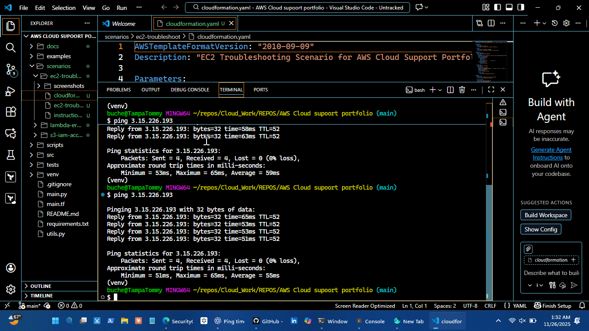
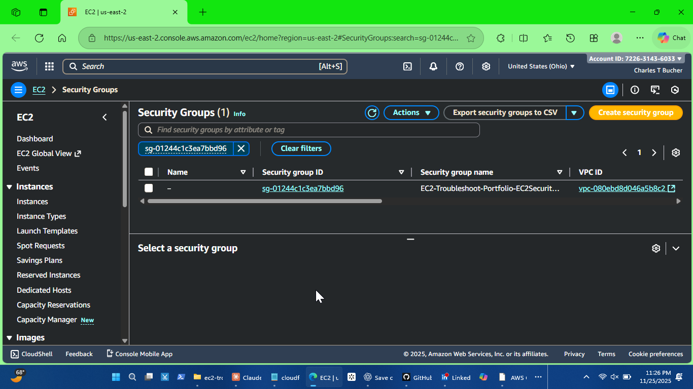
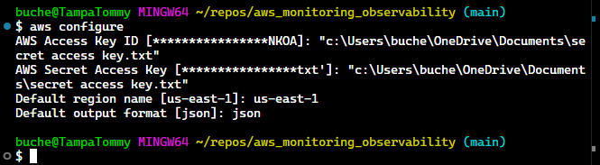
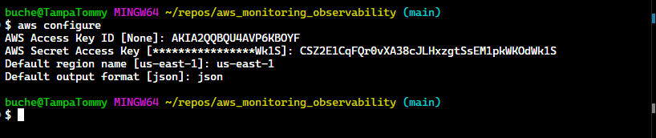
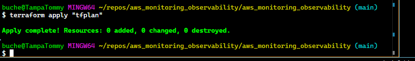
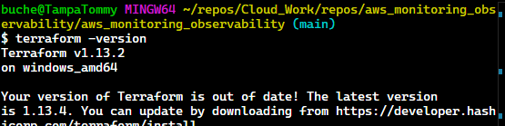

Portfolio Projects
AWS Cloud Support Simulator
Simulates real AWS operations: EC2 troubleshooting, IAM/security, and Python automation.

ACSS_01: EC2 connectivity verified via ping

ACSS_04: Security group configuration applied
Multi-Tier App Troubleshooting Playground
Deployed multi-tier web apps to practice monitoring, troubleshooting, and incident response in AWS.

Multi_12: Live multi-tier dashboard

Multi_19: Architecture overview
AWS Monitoring & Observability
End-to-end monitoring: CloudWatch dashboards, alerts, logs, and network metrics for operational insight.

Observability_01: AWS setup/configuration

Observability_06: Central dashboard

Observability_07: Example logs
Terraform Automation
Automated AWS infrastructure deployment and verification with Terraform.

Terraform_01: Apply infrastructure updates

Terraform verification of deployed stack